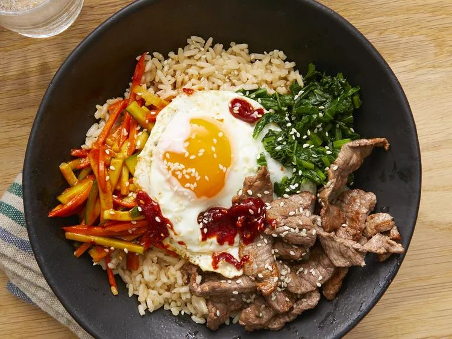
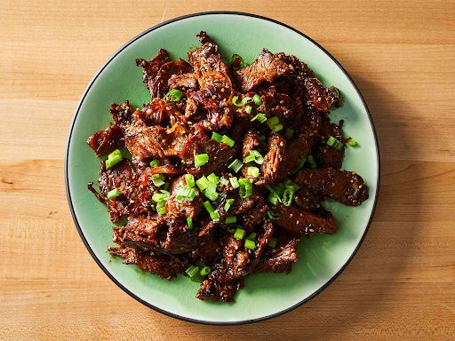
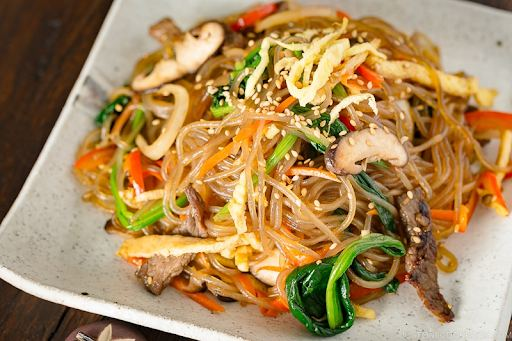
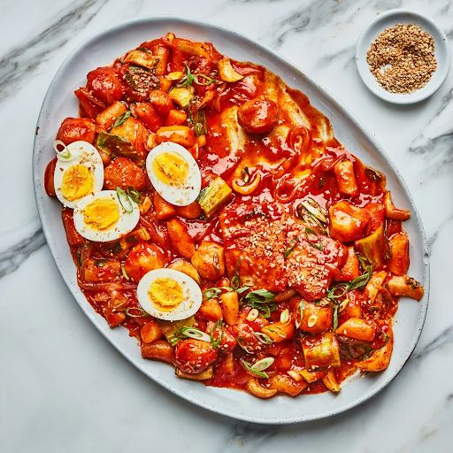
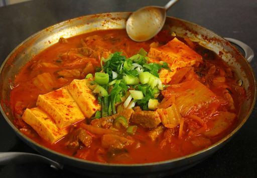
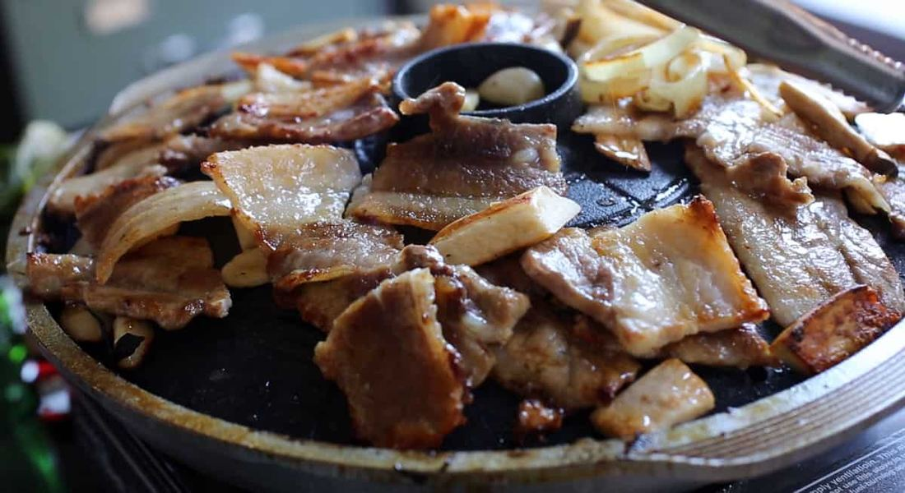
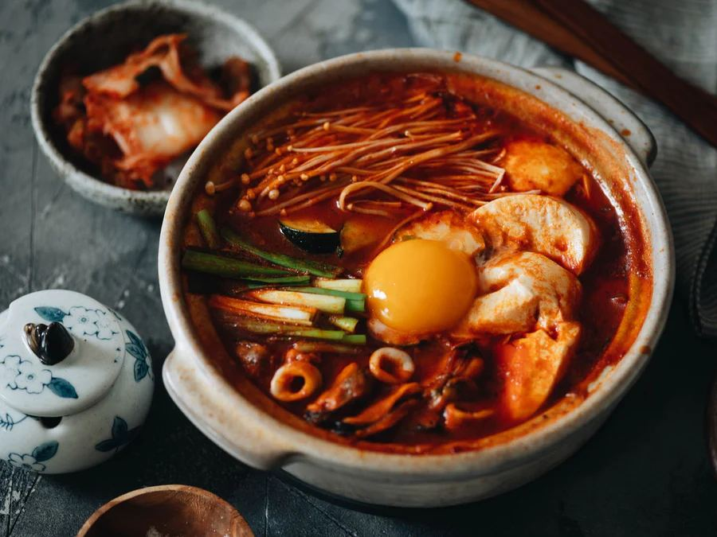
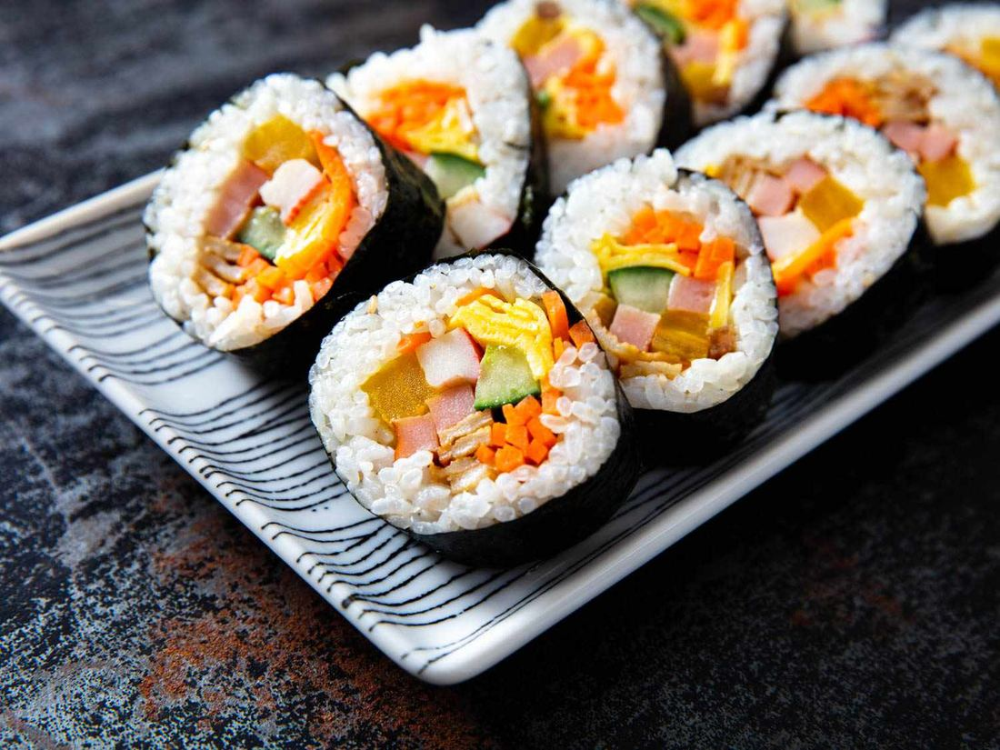

Top 10 Korean Dishes You Can Make with Ingredients from Kimchi Mart
Korean cuisine, with its vibrant flavors, diverse textures, and healthful properties, has captivated food enthusiasts worldwide. From sizzling barbecues to comforting stews and savory pancakes, there's a Korean dish for everyone. Preparing these authentic meals at home is more accessible than you think, especially when you have a reliable source for genuine Korean ingredients. At Miami Kimchi , we offer not just our signature kimchi but also a wide array of essential Korean ingredients to elevate your home cooking.
This guide will walk you through ten of Korea's most beloved dishes, all masterable in your own kitchen using high-quality ingredients from Kimchi Mart. Whether you're a seasoned chef or just starting, these recipes offer a perfect gateway to exploring Korean flavors. Get ready to transform your kitchen into a Korean culinary haven!
1. Bibimbap (Mixed Rice with Vegetables)

Bibimbap, meaning "mixed rice," is a stunning and versatile dish that's as healthy as it is delicious. It features warm rice topped with sautéed and seasoned vegetables (namul), often beef or tofu, and a fried egg. Served with gochujang, you mix it all before eating for a symphony of flavors and textures. It's a great way to use various vegetables you have on hand.
Ingredients and Preparation
To create authentic bibimbap, you'll need colorful vegetables and key Korean condiments. All these essential ingredients are readily available at Kimchi Mart, ensuring you capture the dish's true essence.
Essential Kimchi Mart Ingredients:
- Gochujang: For that spicy, savory kick.
- Sesame Oil: For rich, nutty aroma.
- Soy Sauce: For seasoning.
- Garlic: Fresh minced.
- Spinach (Sigeumchi Namul): Blanched and seasoned.
- Bean Sprouts (Kongnamul): Crunchy.
- Mushrooms (Pyogo Beoseot): Sautéed.
- Carrots (Danggeun): Julienne-cut.
- Zucchini (Hobak): Thinly sliced.
- Beef (optional): Thinly sliced bulgogi-style.
- Eggs: For frying or omelet.
- White Rice: The foundation.
Preparation Steps:
- Prepare Vegetables: Blanch and season spinach and bean sprouts. Sauté carrots, zucchini, and mushrooms separately.
- Cook Meat (if using): Marinate and stir-fry thinly sliced beef.
- Fry Egg: Fry eggs sunny-side up.
- Assemble: Place warm rice in a bowl, then artfully arrange vegetables, meat, and egg on top.
- Serve: Add gochujang. Mix thoroughly before eating.
Expert Tip: Seasoning each vegetable individually enhances its distinct flavor. Don't overcook them; they should retain some crispness.
2. Bulgogi (Marinated Beef)

Bulgogi, meaning "fire meat," is a globally loved Korean dish known for its tender, thinly sliced marinated beef. It's typically grilled to perfection, offering a sweet, savory, and incredibly juicy flavor. Bulgogi is often enjoyed wrapped in crisp lettuce with ssamjang (spicy dipping sauce), creating a delightful interplay of textures. Its approachable flavors make it a fantastic introduction to Korean barbecue.
Marinade Recipe and Cooking Tips
The secret to exquisite bulgogi is its rich, aromatic marinade. Kimchi Mart provides all the spices and sauces you'll need to create this signature Korean flavor.
Essential Kimchi Mart Ingredients:
- Thinly Sliced Beef: Sirloin, ribeye, or brisket.
- Soy Sauce: Marinade base.
- Sesame Oil: Nutty aroma.
- Garlic: Fresh minced.
- Ginger: Fresh grated.
- Sugar (or fruit puree): Balances sweetness and tenderizes.
- Black Pepper: Subtle kick.
- Scallions: For freshness.
Marinade Recipe:
- In a large bowl, combine 1/2 cup soy sauce, 2 tablespoons sesame oil, 2 tablespoons minced garlic, 1 tablespoon grated ginger, 2 tablespoons sugar (or 1/4 cup grated Asian pear/apple), and 1/2 teaspoon black pepper.
- Add 1 pound of thinly sliced beef, coating all pieces well.
- Marinate for at least 30 minutes, ideally 2-4 hours, or overnight for deeper flavor.
Cooking Tips:
- Grilling: Heat a grill pan or outdoor grill. Grill beef in a single layer for 1-2 minutes per side until lightly charred.
- Pan-Frying: Use a hot skillet or wok. Cook in small batches to sear.
- Serving: Serve hot with rice, lettuce wraps, and ssamjang . Garnish with scallions.
Expert Tip: Grated Asian pear or apple tenderizes meat and adds natural sweetness. Cook bulgogi in small batches to maintain high heat for a perfect caramelized exterior.
3. Japchae (Stir-Fried Glass Noodles)

Japchae is an exquisite Korean dish featuring slippery, translucent glass noodles (dangmyeon) made from sweet potato starch, stir-fried with colorful vegetables and often beef or mushrooms. It's known for its bouncy texture, subtle sweetness, and savory umami depth. Often served as a celebratory dish or a flavorful side, Japchae is visually appealing and satisfying, offering a delightful contrast of textures.
Ingredient Selection and Cooking Steps
The success of Japchae hinges on selecting the right glass noodles and achieving balanced seasoning. All the essential ingredients for this classic dish are available at Kimchi Mart.
Essential Kimchi Mart Ingredients:
- Dangmyeon (Korean Glass Noodles): The star.
- Soy Sauce: For seasoning.
- Sesame Oil: For flavor and gloss.
- Garlic: Minced.
- Sugar: A touch of sweetness.
- Spinach: Blanched and seasoned.
- Carrots: Julienne-cut.
- Onion: Thinly sliced.
- Mushrooms: Shiitake or Enoki.
- Beef (optional): Thinly sliced.
- Sesame Seeds: For garnish.
Cooking Steps:
- Prepare Noodles: Boil noodles until al dente, rinse, drain, and toss with sesame oil.
- Prepare Vegetables & Meat: Separately sauté each vegetable with salt and garlic. Stir-fry marinated beef if using.
- Combine & Season: In a large bowl, combine noodles, vegetables, and meat.
- Make Japchae Sauce: Whisk together soy sauce, sesame oil, sugar, and minced garlic.
- Mix & Serve: Pour sauce over ingredients. Mix gently with gloved hands until coated. Garnish with sesame seeds.
Expert Tip: Don't overcook the noodles; they should remain bouncy. Seasoning each ingredient individually before combining ensures layered and balanced flavors.
4. Tteokbokki (Spicy Rice Cakes)

Tteokbokki is a quintessential Korean street food, loved for its chewy rice cakes in a fiery, sweet, and savory gochujang-based sauce. This iconic dish offers satisfying texture and bold flavor. Often augmented with fish cakes, boiled eggs, and scallions, Tteokbokki is a popular snack or meal, embodying Korean street food culture.
Sauce Preparation and Cooking Method
The magic of Tteokbokki truly lies in its addictive sauce, perfectly coating the chewy rice cakes. You can find all the necessary spices and sauces for this classic dish at Kimchi Mart.
Essential Kimchi Mart Ingredients:
- Garaetteok (Cylindrical Rice Cakes): Soft and chewy.
- Gochujang: Heart of the sauce.
- Gochugaru: Adjusts spice.
- Korean Fish Cakes (Eomuk): Cut into pieces.
- Sugar (or corn syrup): Balances sweetness.
- Garlic: Minced.
- Dashima (Dried Kelp) or Anchovy Broth: Savory base.
- Scallions: For freshness.
Sauce Preparation:
- In a medium pot, combine 4 cups of broth (or water). Bring to a boil.
- Add gochujang, gochugaru, sugar, and minced garlic. Whisk until smooth. Simmer.
Cooking Method:
- Prepare Rice Cakes: Soak frozen rice cakes in warm water until softened.
- Add Rice Cakes & Fish Cakes: Add to simmering sauce. Stir.
- Simmer: Reduce heat and simmer 8-10 minutes until rice cakes are soft and sauce thickens.
- Add Scallions & Serve: Stir in chopped scallions. Serve hot.
Expert Tip: The sauce should be thick enough to cling to the rice cakes. Simmer longer if too thin, or add more broth if too thick.
5. Kimchi Jjigae (Kimchi Stew)

Kimchi Jjigae is arguably the most iconic and beloved stew in Korean cuisine, a staple in virtually every Korean household. This hearty, bubbling stew centers around well-aged kimchi, simmered with various ingredients like pork (or other meats), tofu, and vegetables in a savory broth. The longer the kimchi ferments, the deeper and more complex the stew's flavor becomes. It's the ultimate comfort food.
Using Aged Kimchi for Depth of Flavor
The secret to an outstanding Kimchi Jjigae is quality aged kimchi. At Kimchi Mart, you can find various kimchi products , including perfectly aged options that will elevate your stew. You might even find special sales for these products at our Miami, FL location .
Essential Kimchi Mart Ingredients:
- Aged Kimchi: Crucial for deep flavor.
- Pork Belly or Shoulder (optional): Adds richness.
- Tofu: For texture and protein.
- Onion: Sliced.
- Scallions: Chopped.
- Gochugaru: Adjusts spice.
- Gochujang (optional):: For extra depth.
- Anchovy Broth or Water: Base of the stew.
- Sesame Oil: For sautéing.
- Garlic: Minced.
Preparation Steps:
- Sauté Kimchi & Pork: In a pot, sauté pork (if using) then add chopped aged kimchi. Sauté for 5-7 minutes.
- Add Broth & Seasonings: Pour in broth. Add gochugaru and minced garlic. If using gochujang, add now. Bring to a boil, then reduce heat.
- Simmer & Add Tofu: Simmer 15-20 minutes. Add sliced tofu and simmer another 5-10 minutes.
- Garnish & Serve: Stir in chopped scallions. Serve hot with rice.
Expert Tip: The sourness of your kimchi is key. Longer simmering time enhances flavor. For expert advice on sourcing and preparation, check out our Pembroke Pines, FL sales .
6. Samgyeopsal (Grilled Pork Belly)

Samgyeopsal, or grilled pork belly, is a quintessential Korean barbecue experience. Grill thick slices of uncured pork belly until crispy and juicy, then cut into bite-sized pieces. Enjoy by wrapping the pork in fresh lettuce or perilla leaves with garlic, green chili, ssamjang , and kimchi. It's a communal and interactive dining experience.
Grilling Techniques and Dipping Sauces
Achieving perfectly crispy yet juicy Samgyeopsal involves simple grilling techniques. Kimchi Mart offers the spices and sauces you'll need to complement this delightful dish.
Essential Kimchi Mart Ingredients:
- Thick-Sliced Pork Belly: Uncured.
- Ssamjang: Essential Korean dipping sauce.
- Garlic: Fresh cloves.
- Green Chili Peppers (optional): Sliced.
- Lettuce Leaves: For wrapping.
- Perilla Leaves (optional): Aromatic flavor.
- Sesame Oil with Salt and Pepper (optional): Simple dip.
- Kimchi: Fresh or grilled.
Grilling Techniques:
- Prepare the Grill: Heat a grill pan or outdoor grill. No oil needed.
- Grill Pork Belly: Grill slices 3-5 minutes per side until golden and crispy.
- Cut & Serve: Cut into bite-sized pieces with kitchen shears. Continue grilling if desired.
- Grill Accompaniments: Cook garlic slices and kimchi on the same grill.
Dipping Sauces:
- Ssamjang: Pre-made or mixed from gochujang, doenjang, sesame oil, garlic, and sugar.
- Salt & Sesame Oil: Mix sesame oil with salt and black pepper.
Expert Tip: Don't overcrowd the grill. Grilling garlic slices mellows their pungency. Have plenty of fresh greens on hand for wrapping!
7. Haemul Pajeon (Seafood Pancake)
Haemul Pajeon is a beloved savory Korean pancake, with abundant green onions and seafood. Crispy on the outside and tender inside, it's a flavorful dish often enjoyed as an appetizer or snack, especially on a rainy day. The combination of fresh seafood and green onions in a light batter creates a unique and delicious experience.
Batter Preparation and Cooking Tips
The key to a successful Haemul Pajeon is a light, airy batter and careful cooking for a crisp exterior. You'll find all the necessary cooking tools and essential ingredients at Kimchi Mart.
Essential Kimchi Mart Ingredients:
- All-Purpose Flour: Batter base.
- Rice Flour or Potato Starch (optional): For crispiness.
- Water (or anchovy broth): For batter.
- Eggs: Enriches batter.
- Green Onions (Scallions): Primary vegetable.
- Assorted Seafood: Shrimp, squid, mussels.
- Garlic: Minced.
- Soy Sauce: For dipping.
- Vinegar: For dipping.
- Sesame Oil: For cooking and dipping.
- Vegetable Oil: For frying.
Batter Preparation:
- Whisk flour, cold water, and egg until just combined.
- Stir in minced garlic.
Cooking Tips:
- Prepare Seafood: Clean, chop, and pat dry.
- Combine & Cook: Heat a skillet with oil. Pour batter to form a pancake.
- Add Toppings: Arrange green onions and seafood over batter.
- Fry: Cook until golden and crispy. Flip and cook other side.
- Serve: Slice into wedges and serve with dipping sauce.
Expert Tip: Use cold water for crispy batter. Don't flip too early; wait until the bottom is golden brown.
8. Sundubu Jjigae (Soft Tofu Stew)

Sundubu Jjigae is a beloved Korean soft tofu stew, known for its incredibly silken tofu, rich and spicy broth, and a customary crack of an egg into the bubbling pot. It's a supremely comforting and soul-warming dish, offering a wonderful blend of savory, spicy, and umami flavors. While traditionally very spicy, it's highly adaptable to your preference.
Spice Level Adjustments and Ingredient Variations
The beauty of Sundubu Jjigae lies in its flexibility. You can easily adjust the spice level and incorporate various ingredients. For local options and guidance, you can also check out our Hollywood, FL sales .
Essential Kimchi Mart Ingredients:
- Soft Tofu (Sundubu): Unpressed, silken tofu.
- Gochugaru: Primary spice.
- Gochujang (optional): Added depth.
- Sesame Oil: For sautéing.
- Garlic: Minced.
- Pork (optional): Thinly sliced or ground.
- Seafood (optional): Shrimp, clams, mussels.
- Onion: Diced.
- Scallions: Chopped.
- Egg: One per serving.
- Soy Sauce or Fish Sauce: For seasoning.
- Anchovy Broth or Water: Base of the stew.
Spice Level Adjustments:
- Mild: 1/2 to 1 tbsp gochugaru.
- Medium: 2 tbsp gochugaru, 1/2 tbsp gochujang.
- Spicy: 3+ tbsp gochugaru, 1 tbsp gochujang.
Ingredient Variations:
- Pork Sundubu: Sauté pork first.
- Seafood Sundubu: Add shrimp, clams, or mussels.
- Combination Sundubu: Use both pork and seafood.
- Vegetarian Sundubu: Omit meat/seafood, use vegetable broth, add mushrooms/zucchini.
Preparation Steps:
- Aromatic Base: Heat sesame oil. Sauté garlic, onion, gochugaru (and optional gochujang). Cook pork/seafood if using.
- Add Broth & Simmer: Pour in broth. Season. Bring to a boil.
- Add Tofu & Simmer: Gently scoop in tofu. Simmer 5-7 minutes.
- Finish & Serve: Crack an egg into the stew. Top with scallions. Serve immediately.
Expert Tip: Sautéing aromatics and gochugaru in sesame oil creates the essential spicy oil base. Use Korean soft tofu for the characteristic silken texture.
9. Gimbap (Seaweed Rice Rolls)

Gimbap, often called Korean sushi, is a popular and portable dish made by rolling seasoned rice and various fillings in dried seaweed (gim). Unlike Japanese sushi, Gimbap uses seasoned rice with sesame oil and salt, and typically no raw fish. It's versatile, filled with vegetables, eggs, meat, or tuna. Gimbap is a staple for picnics, packed lunches, or a quick snack.
Rolling Techniques and Filling Ideas
Mastering Gimbap rolling takes practice. You'll find all the necessary cooking tools and essential ingredients at Kimchi Mart.
Essential Kimchi Mart Ingredients:
- Dried Seaweed Sheets (Gim): For rolling.
- Cooked Short-Grain Rice: Seasoned.
- Filling Ingredients:
- Danmuji (Pickled Radish): For tang.
- Gim-flavored Burdock Root (Ueong Jorim): Sweet and savory.
- Spinach: Blanched.
- Carrots: Sautéed.
- Egg: Omelet strips.
- Ham or Imitation Crab Meat: Sliced.
- Bulgogi (optional): Sliced beef.
- Tuna (optional): Mixed with mayonnaise.
- Sesame Oil: For rice and brushing rolls.
- Sesame Seeds: For garnish.
Rolling Techniques:
- Prepare Rice: Season warm rice with sesame oil and salt.
- Prepare Fillings: Cook, season, and slice all fillings.
- Lay Seaweed: Place on a bamboo mat.
- Spread Rice: Thinly spread rice over 2/3 of seaweed, leaving a border.
- Arrange Fillings: Line fillings across the center. Don't overfill!
- Roll Tightly: Use the mat to roll tightly, tucking in ingredients. Seal with water.
- Finish: Brush with sesame oil, sprinkle with sesame seeds.
Filling Ideas:
- Classic: Danmuji, burdock root, egg, spinach, ham, imitation crab.
- Bulgogi Gimbap: Cooked bulgogi.
- Tuna Gimbap: Tuna with mayo.
- Vegetarian: Tofu, various sautéed vegetables, avocado.
Expert Tip: Don't overfill. A firm, even roll is essential for neat slicing. Use a sharp, slightly wet knife for clean cuts.
10. Dakgangjeong (Sweet Crispy Chicken)
Dakgangjeong is a popular Korean fried chicken dish known for its incredibly crispy texture and a thick, glossy, sweet, and spicy sauce. Typically double-fried for extra crunch, then coated in a sticky glaze, often with nuts or seeds. It's a universally loved dish, perfect as a snack, appetizer, or main.
Sauce Preparation and Frying Tips
Achieving perfect crispy chicken and irresistible sauce for Dakgangjeong is key. All necessary spices and sauces are available at Kimchi Mart. Check out our Coral Springs, FL sales for specific ingredients or even pre-made options.
Essential Kimchi Mart Ingredients:
- Chicken Thighs: Boneless, skinless, cut into pieces.
- Potato Starch or Cornstarch: For coating.
- Frying Oil: Vegetable, canola, or peanut oil.
- For the Sauce:
- Gochujang: Spicy kick.
- Soy Sauce: Savory depth.
- Sugar or Corn Syrup: Sweetness and gloss.
- Garlic: Minced.
- Ginger: Grated.
- Rice Vinegar: Tang.
- Sesame Oil: Nutty flavor.
- Water.
Sauce Preparation:
- In a saucepan, combine gochujang, soy sauce, sugar (or corn syrup), minced garlic, grated ginger, rice vinegar, sesame oil, and water.
- Simmer, stirring constantly, until thickened to a syrup. Set aside.
Frying Tips:
- Prepare Chicken: Pat dry. Toss with potato starch until evenly coated.
- First Fry: Heat oil to 350°F (175°C). Fry chicken in batches 5-7 minutes until lightly golden. Drain.
- Second Fry (Crucial): Increase oil to 375°F (190°C). Fry chicken again 2-3 minutes until deeply golden and crispy. Drain.
- Coat & Serve: Toss fried chicken with sauce. Garnish with peanuts or sesame seeds. Serve immediately.
Expert Tip: Double-frying ensures super crispy Dakgangjeong. Ensure chicken is thoroughly dry before coating to prevent a soggy crust.
Conclusion
Embarking on the journey of cooking Korean dishes at home is a rewarding experience that connects you with a rich culinary tradition. From Bibimbap to Kimchi Jjigae, these ten iconic dishes offer a fantastic starting point for any home cook. The accessibility of authentic ingredients through Kimchi Mart makes this culinary adventure even more achievable, allowing you to recreate the vibrant tastes of Korea right in your own kitchen.
We encourage you to experiment with these recipes, adjust them to your taste, and share homemade Korean food. Kimchi Mart is your trusted partner for sourcing high-quality ingredients, ensuring your dishes are authentic and delicious. You can always find our latest offers and availability through our main website Miami Kimchi or by checking out sales in specific areas like Miami, FL , Pembroke Pines, FL , Hollywood, FL , and Coral Springs, FL .
Frequently Asked Questions ?
-
What are the essential Korean ingredients I should start with?
You should begin with gochujang (Korean chili paste), gochugaru (Korean chili powder), soy sauce, sesame oil, and garlic. These form the foundation for most Korean dishes. You can find all these spices and sauces at Kimchi Mart.
-
Can I make these dishes if I'm new to Korean cooking?
Absolutely! These recipes are chosen for their accessibility. Start with one or two dishes, pay attention to the tips, and don't be afraid to experiment. Practice makes perfect, and authentic ingredients from Kimchi Mart will set you up for success.
-
How do I adjust the spice level in Korean dishes?
The main spice comes from gochugaru and gochujang. To reduce spice, use less gochugaru. To increase it, add more. You can always start with a smaller amount and add more to taste.
-
Where can I find authentic Korean ingredients?
You can find a wide range of authentic Korean ingredients at Kimchi Mart. We offer both common pantry staples and specialized items to help you create genuine Korean flavors. Check out our products online or visit our local stores!
-
What are some good cooking tools for Korean cooking?
A good non-stick pan, a large pot, kitchen shears, and a sturdy cutting board are great starting points. For specific dishes, items like a bamboo rolling mat for Gimbap or a tteokbaegi (earthenware pot) for stews can enhance your experience.
-
Can I make these recipes vegetarian or vegan?
Many Korean dishes are highly adaptable. For example, Bibimbap can be made vegetarian by omitting meat, and Sundubu Jjigae can be made vegan by using vegetable broth and no meat/seafood. You can also find vegan-friendly kimchi products.
< Older Post
Newer Post >
Shop these ingredients at Kimchi Mart
Six stores across South Florida — or order online and pick up in an hour.